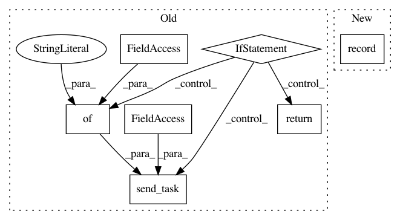

834e36cf6f49b73c0c9ee66ee274977ef3a324a1,polyaxon/signals/deletion.py,,build_job_pre_delete,#Any#,28
Before Change
"subpath": job.subpath,
})
if not job.is_running:
return
celery_app.send_task(
SchedulerCeleryTasks.BUILD_JOBS_STOP,
kwargs={
"project_name": job.project.unique_name,
"project_uuid": job.project.uuid.hex,
"build_job_name": job.unique_name,
"build_job_uuid": job.uuid.hex,
"update_status": False
})
@receiver(post_delete, sender=BuildJob, dispatch_uid="build_job_post_delete")
@ignore_raw
After Change
"subpath": job.subpath,
})
auditor.record(event_type=BUILD_JOB_CLEANED_TRIGGERED, instance=job)
@receiver(post_delete, sender=BuildJob, dispatch_uid="build_job_post_delete")
@ignore_raw
In pattern: SUPERPATTERN
Frequency: 3
Non-data size: 7
Instances
Project Name: polyaxon/polyaxon
Commit Name: 834e36cf6f49b73c0c9ee66ee274977ef3a324a1
Time: 2019-01-23
Author: mouradmourafiq@gmail.com
File Name: polyaxon/signals/deletion.py
Class Name:
Method Name: build_job_pre_delete
Project Name: polyaxon/polyaxon
Commit Name: 834e36cf6f49b73c0c9ee66ee274977ef3a324a1
Time: 2019-01-23
Author: mouradmourafiq@gmail.com
File Name: polyaxon/signals/deletion.py
Class Name:
Method Name: job_pre_delete
Project Name: polyaxon/polyaxon
Commit Name: 959d5b43df66407c65861e897efdf506996ba845
Time: 2019-01-23
Author: mouradmourafiq@gmail.com
File Name: polyaxon/signals/statuses.py
Class Name:
Method Name: experiment_job_status_post_save